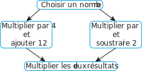

| Chapitre 16 | - Equations produit nul |
Activité Introduction
Voici un programme de calcul :
Résoudre une équation, c'est trouver la ou les valeurs que doivent prendre les inconnues pour que l'égalité soit vraie.
On peut pour cela effectuer différents calculs sur les expressions de part et d'autre du signe "=" en veillant à effectuer le même calcul sur les membres de droite et de gauche simultanément.
Exemple de résolution :
| $3x$ | $-6$ | = | $-5x$ | $+4,4$ |
| $\textcolor{#009900}{+6}$ | $\textcolor{#009900}{+6}$ | |||
| $3x$ | = | $-5x$ | $+10,4$ | |
| $\textcolor{#009900}{+5x}$ | $\textcolor{#009900}{+5x}$ | |||
| $8x$ | = | $+10,4$ | ||
| $\textcolor{#C00000}{\div8}$ | $\textcolor{#C00000}{\div8}$ | |||
| $x$ | = | $1,3$ |
Exemple :
Quels que soient $a$ et $b$ deux nombres, si $a\times b=0$ alors $a = 0$ ou $b = 0$.
Pour résoudre l'équation $(5x+1)(3-2x)=0$, on utilise la propriété précédente.
Ici $5x+1=0$ ou $3-2x=0$. Cette équation a donc 2 solutions :
| $5x$ | $+1$ | = | $0$ |
| $\textcolor{#009900}{-1}$ | $\textcolor{#009900}{-1}$ | ||
| $5x$ | = | $-1$ | |
| $\textcolor{#C00000}{\div5}$ | $\textcolor{#C00000}{\div5}$ | ||
| $x$ | = | $-0,2$ |
| $3$ | $-2x$ | = | $0$ |
| $\textcolor{#009900}{+2x}$ | $\textcolor{#009900}{+2x}$ | ||
| $3$ | = | $2x$ | |
| $\textcolor{#C00000}{\div2}$ | $\textcolor{#C00000}{\div2}$ | ||
| $1,5$ | = | $x$ |
L'équation $(5x+1)(3-2x)=0$ a deux solutions : -0,2 et 1,5.
On utilise la propriété précédente pour résoudre des équations du second degré à l'aide des identités remarquables.
Exemples :
Remarque :
Cela marche aussi pour $x^2=a^2$ car cela revient à $x^2-a^2=0$
Démonstration :
$(x-a)(x+a)=x^2-ax+ax-a^2=x^2-a^2$ donc $x^2-a^2=0$ si $(x-a)(x+a)=0$ donc si $x-a=0$ ou si $x+a=0$.
Les solutions sont donc bien $x=a$ ou $x=-a$.